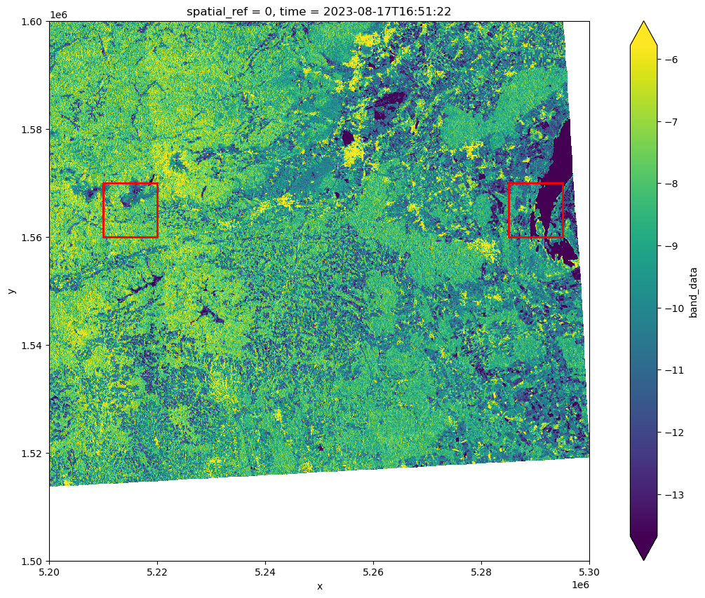
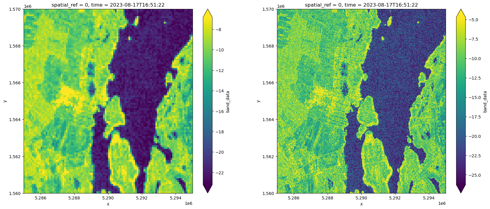
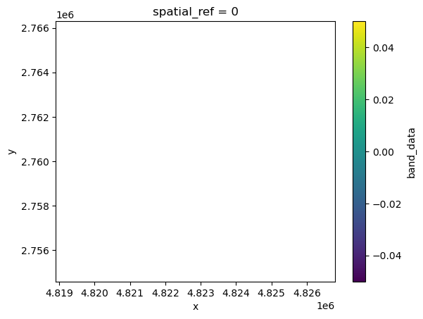
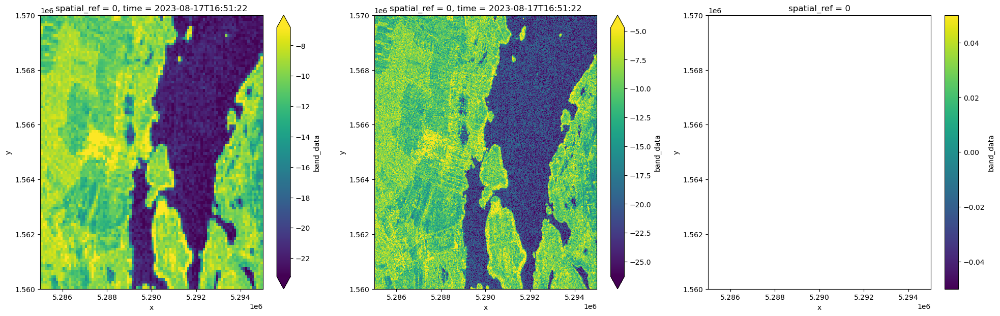
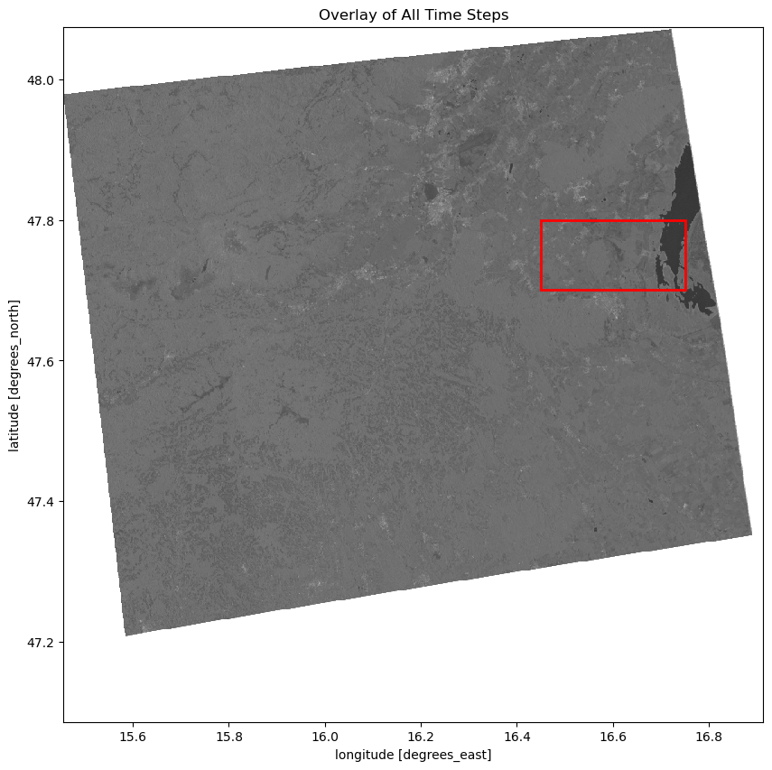
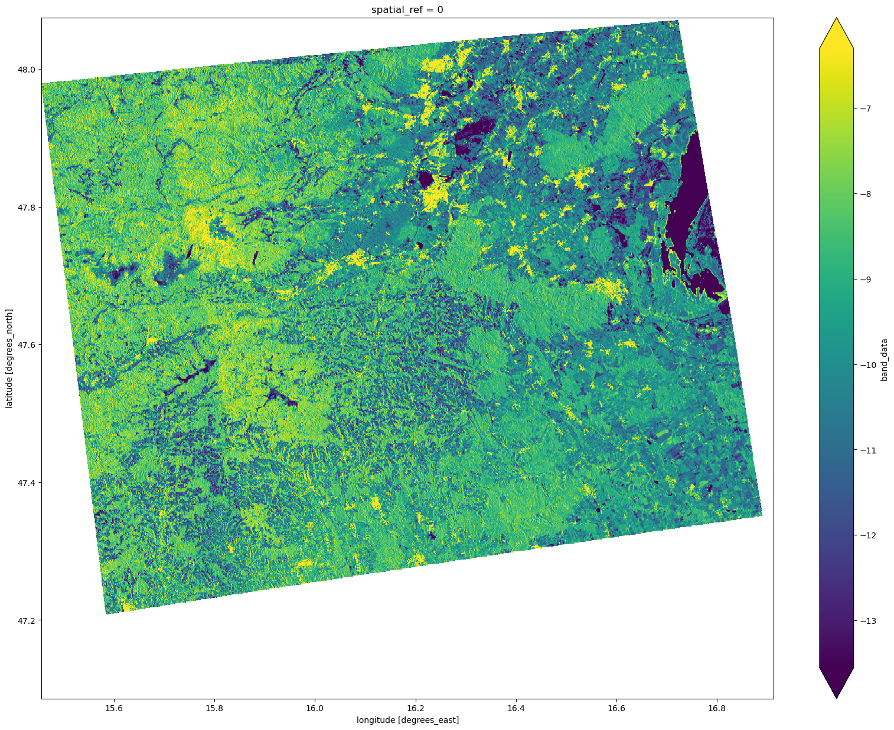
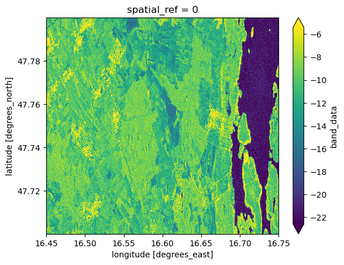
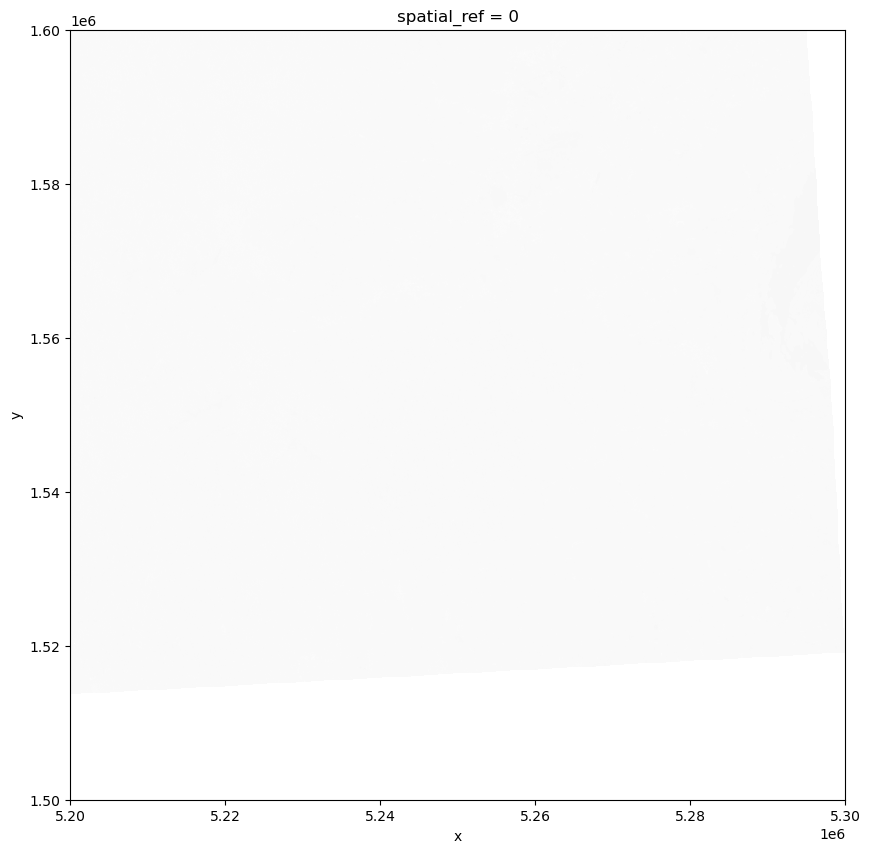

import os
import xarray as xr
import rioxarray
import rasterio
import dask.array as da
from glob import glob
from pathlib import Path
import matplotlib.pyplot as plt
import folium
import matplotlib.patches as patches
from datetime import datetime
import pandas as pdLoad Sentinel-1 data
Load Metadata to get some information on the data. We want to get the scale_factor of the data.
data_path = Path('~/shared/datasets/rs/datapool/mrs/saocom_gamma/S1gammaNeusiedler').expanduser() # SAT-1 data is inside the saocom_gamma folder but this could change
tif_files = glob(f"{data_path}/*.tif")
for tif_path in tif_files:
print(f"Metadata for file: {os.path.basename(tif_path)}")
with rasterio.open(tif_path) as src:
tags = src.tags()
print(src.meta)
print(f"Tags: {tags}")
print(f"Scalefactor: {tags.get('scale_factor')}\n")
#break
Metadata for file: D20230829_165123--_GMR------_S1AIWGRDH1VVA_146_A0105_EU010M_E052N015T1.tif
{'driver': 'GTiff', 'dtype': 'int16', 'nodata': -9999.0, 'width': 10000, 'height': 10000, 'count': 1, 'crs': CRS.from_epsg(27704), 'transform': Affine(10.0, 0.0, 5200000.0,
0.0, -10.0, 1600000.0)}
Tags: {'abs_orbit_number': '050093', 'band_1': 'Gamma0_VV', 'border_noise_removed': 'True', 'creator': 'TUWGEO', 'distanceuom': 'm', 'distancevalue': '10', 'equi7_tile': 'EU010M_E052N015T1', 'ext_dem': '/eodc/private/tuwgeo/users/acube/data/input/acube_dem_eh.tif', 'grid': 'Equi7 Grid', 'gtc_applied': 'True', 'log_file': 'tasklist_2_A01_gmr_jobfile_A0105_log_20231201_073256.xml', 'orbit_aux_file': 'POE', 'parent_data_file': 'S1A_IW_GRDH_1SDV_20230829T165123_20230829T165148_050093_060726_855E.zip', 'polarisation': 'VV', 'precise_orbit_applied': 'True', 'processing_date': '2023-12-01 07:32:57', 'processing_software': 'SGRT', 'processing_software_version': 'A0105-2.4.9.post.dev6.pre', 'rel_orbit_number': '146', 'rtf_applied': 'True', 'sat_product_id': 'S1AIWGRDH1VVA', 'scale_factor': '100.0', 'thermal_noise_removed': 'True', 'time_begin': '2023-08-29 16:51:23', 'time_end': '2023-08-29 16:51:48', 'variable_name': 'GMR', 'AREA_OR_POINT': 'Area'}
Scalefactor: 100.0
Metadata for file: D20230910_165124--_GMR------_S1AIWGRDH1VVA_146_A0105_EU010M_E052N015T1.tif
{'driver': 'GTiff', 'dtype': 'int16', 'nodata': -9999.0, 'width': 10000, 'height': 10000, 'count': 1, 'crs': CRS.from_epsg(27704), 'transform': Affine(10.0, 0.0, 5200000.0,
0.0, -10.0, 1600000.0)}
Tags: {'abs_orbit_number': '050268', 'band_1': 'Gamma0_VV', 'border_noise_removed': 'True', 'creator': 'TUWGEO', 'distanceuom': 'm', 'distancevalue': '10', 'equi7_tile': 'EU010M_E052N015T1', 'ext_dem': '/eodc/private/tuwgeo/users/acube/data/input/acube_dem_eh.tif', 'grid': 'Equi7 Grid', 'gtc_applied': 'True', 'log_file': 'tasklist_4_A01_gmr_jobfile_A0105_log_20231201_080609.xml', 'orbit_aux_file': 'POE', 'parent_data_file': 'S1A_IW_GRDH_1SDV_20230910T165124_20230910T165149_050268_060D16_BAC4.zip', 'polarisation': 'VV', 'precise_orbit_applied': 'True', 'processing_date': '2023-12-01 08:06:10', 'processing_software': 'SGRT', 'processing_software_version': 'A0105-2.4.9.post.dev6.pre', 'rel_orbit_number': '146', 'rtf_applied': 'True', 'sat_product_id': 'S1AIWGRDH1VVA', 'scale_factor': '100.0', 'thermal_noise_removed': 'True', 'time_begin': '2023-09-10 16:51:24', 'time_end': '2023-09-10 16:51:49', 'variable_name': 'GMR', 'AREA_OR_POINT': 'Area'}
Scalefactor: 100.0
Metadata for file: D20230817_165122--_GMR------_S1AIWGRDH1VVA_146_A0105_EU010M_E052N015T1.tif
{'driver': 'GTiff', 'dtype': 'int16', 'nodata': -9999.0, 'width': 10000, 'height': 10000, 'count': 1, 'crs': CRS.from_epsg(27704), 'transform': Affine(10.0, 0.0, 5200000.0,
0.0, -10.0, 1600000.0)}
Tags: {'abs_orbit_number': '049918', 'band_1': 'Gamma0_VV', 'border_noise_removed': 'True', 'creator': 'TUWGEO', 'distanceuom': 'm', 'distancevalue': '10', 'equi7_tile': 'EU010M_E052N015T1', 'ext_dem': '/eodc/private/tuwgeo/users/acube/data/input/acube_dem_eh.tif', 'grid': 'Equi7 Grid', 'gtc_applied': 'True', 'log_file': 'tasklist_2_A01_gmr_jobfile_A0105_log_20231201_065607.xml', 'orbit_aux_file': 'POE', 'parent_data_file': 'S1A_IW_GRDH_1SDV_20230817T165122_20230817T165147_049918_060121_784A.zip', 'polarisation': 'VV', 'precise_orbit_applied': 'True', 'processing_date': '2023-12-01 06:56:08', 'processing_software': 'SGRT', 'processing_software_version': 'A0105-2.4.9.post.dev6.pre', 'rel_orbit_number': '146', 'rtf_applied': 'True', 'sat_product_id': 'S1AIWGRDH1VVA', 'scale_factor': '100.0', 'thermal_noise_removed': 'True', 'time_begin': '2023-08-17 16:51:22', 'time_end': '2023-08-17 16:51:47', 'variable_name': 'GMR', 'AREA_OR_POINT': 'Area'}
Scalefactor: 100.0
Metadata for file: D20231028_165124--_GMR------_S1AIWGRDH1VVA_146_A0105_EU010M_E052N015T1.tif
{'driver': 'GTiff', 'dtype': 'int16', 'nodata': -9999.0, 'width': 10000, 'height': 10000, 'count': 1, 'crs': CRS.from_epsg(27704), 'transform': Affine(10.0, 0.0, 5200000.0,
0.0, -10.0, 1600000.0)}
Tags: {'abs_orbit_number': '050968', 'band_1': 'Gamma0_VV', 'border_noise_removed': 'True', 'creator': 'TUWGEO', 'distanceuom': 'm', 'distancevalue': '10', 'equi7_tile': 'EU010M_E052N015T1', 'ext_dem': '/eodc/private/tuwgeo/users/acube/data/input/acube_dem_eh.tif', 'grid': 'Equi7 Grid', 'gtc_applied': 'True', 'log_file': 'tasklist_13_A01_gmr_jobfile_A0105_log_20231201_020603.xml', 'orbit_aux_file': 'None', 'parent_data_file': 'S1A_IW_GRDH_1SDV_20231028T165124_20231028T165149_050968_062503_8D6A.zip', 'polarisation': 'VV', 'precise_orbit_applied': 'False', 'processing_date': '2023-12-01 02:06:04', 'processing_software': 'SGRT', 'processing_software_version': 'A0105-2.4.9.post.dev6.pre', 'rel_orbit_number': '146', 'rtf_applied': 'True', 'sat_product_id': 'S1AIWGRDH1VVA', 'scale_factor': '100.0', 'thermal_noise_removed': 'True', 'time_begin': '2023-10-28 16:51:24', 'time_end': '2023-10-28 16:51:49', 'variable_name': 'GMR', 'AREA_OR_POINT': 'Area'}
Scalefactor: 100.0
Metadata for file: D20231016_165124--_GMR------_S1AIWGRDH1VVA_146_A0105_EU010M_E052N015T1.tif
{'driver': 'GTiff', 'dtype': 'int16', 'nodata': -9999.0, 'width': 10000, 'height': 10000, 'count': 1, 'crs': CRS.from_epsg(27704), 'transform': Affine(10.0, 0.0, 5200000.0,
0.0, -10.0, 1600000.0)}
Tags: {'abs_orbit_number': '050793', 'band_1': 'Gamma0_VV', 'border_noise_removed': 'True', 'creator': 'TUWGEO', 'distanceuom': 'm', 'distancevalue': '10', 'equi7_tile': 'EU010M_E052N015T1', 'ext_dem': '/eodc/private/tuwgeo/users/acube/data/input/acube_dem_eh.tif', 'grid': 'Equi7 Grid', 'gtc_applied': 'True', 'log_file': 'tasklist_14_A01_gmr_jobfile_A0105_log_20231201_051314.xml', 'orbit_aux_file': 'POE', 'parent_data_file': 'S1A_IW_GRDH_1SDV_20231016T165124_20231016T165149_050793_061F17_EF2F.zip', 'polarisation': 'VV', 'precise_orbit_applied': 'True', 'processing_date': '2023-12-01 05:13:15', 'processing_software': 'SGRT', 'processing_software_version': 'A0105-2.4.9.post.dev6.pre', 'rel_orbit_number': '146', 'rtf_applied': 'True', 'sat_product_id': 'S1AIWGRDH1VVA', 'scale_factor': '100.0', 'thermal_noise_removed': 'True', 'time_begin': '2023-10-16 16:51:24', 'time_end': '2023-10-16 16:51:49', 'variable_name': 'GMR', 'AREA_OR_POINT': 'Area'}
Scalefactor: 100.0
Metadata for file: D20230922_165124--_GMR------_S1AIWGRDH1VVA_146_A0105_EU010M_E052N015T1.tif
{'driver': 'GTiff', 'dtype': 'int16', 'nodata': -9999.0, 'width': 10000, 'height': 10000, 'count': 1, 'crs': CRS.from_epsg(27704), 'transform': Affine(10.0, 0.0, 5200000.0,
0.0, -10.0, 1600000.0)}
Tags: {'abs_orbit_number': '050443', 'band_1': 'Gamma0_VV', 'border_noise_removed': 'True', 'creator': 'TUWGEO', 'distanceuom': 'm', 'distancevalue': '10', 'equi7_tile': 'EU010M_E052N015T1', 'ext_dem': '/eodc/private/tuwgeo/users/acube/data/input/acube_dem_eh.tif', 'grid': 'Equi7 Grid', 'gtc_applied': 'True', 'log_file': 'tasklist_7_A01_gmr_jobfile_A0105_log_20231201_082733.xml', 'orbit_aux_file': 'POE', 'parent_data_file': 'S1A_IW_GRDH_1SDV_20230922T165124_20230922T165149_050443_06130C_7915.zip', 'polarisation': 'VV', 'precise_orbit_applied': 'True', 'processing_date': '2023-12-01 08:27:33', 'processing_software': 'SGRT', 'processing_software_version': 'A0105-2.4.9.post.dev6.pre', 'rel_orbit_number': '146', 'rtf_applied': 'True', 'sat_product_id': 'S1AIWGRDH1VVA', 'scale_factor': '100.0', 'thermal_noise_removed': 'True', 'time_begin': '2023-09-22 16:51:24', 'time_end': '2023-09-22 16:51:49', 'variable_name': 'GMR', 'AREA_OR_POINT': 'Area'}
Scalefactor: 100.0
Metadata for file: D20231004_165124--_GMR------_S1AIWGRDH1VVA_146_A0105_EU010M_E052N015T1.tif
{'driver': 'GTiff', 'dtype': 'int16', 'nodata': -9999.0, 'width': 10000, 'height': 10000, 'count': 1, 'crs': CRS.from_epsg(27704), 'transform': Affine(10.0, 0.0, 5200000.0,
0.0, -10.0, 1600000.0)}
Tags: {'abs_orbit_number': '050618', 'band_1': 'Gamma0_VV', 'border_noise_removed': 'True', 'creator': 'TUWGEO', 'distanceuom': 'm', 'distancevalue': '10', 'equi7_tile': 'EU010M_E052N015T1', 'ext_dem': '/eodc/private/tuwgeo/users/acube/data/input/acube_dem_eh.tif', 'grid': 'Equi7 Grid', 'gtc_applied': 'True', 'log_file': 'tasklist_13_A01_gmr_jobfile_A0105_log_20231201_035056.xml', 'orbit_aux_file': 'POE', 'parent_data_file': 'S1A_IW_GRDH_1SDV_20231004T165124_20231004T165149_050618_06190F_38E7.zip', 'polarisation': 'VV', 'precise_orbit_applied': 'True', 'processing_date': '2023-12-01 03:50:57', 'processing_software': 'SGRT', 'processing_software_version': 'A0105-2.4.9.post.dev6.pre', 'rel_orbit_number': '146', 'rtf_applied': 'True', 'sat_product_id': 'S1AIWGRDH1VVA', 'scale_factor': '100.0', 'thermal_noise_removed': 'True', 'time_begin': '2023-10-04 16:51:24', 'time_end': '2023-10-04 16:51:49', 'variable_name': 'GMR', 'AREA_OR_POINT': 'Area'}
Scalefactor: 100.0
Metadata for file: D20230805_165122--_GMR------_S1AIWGRDH1VVA_146_A0105_EU010M_E052N015T1.tif
{'driver': 'GTiff', 'dtype': 'int16', 'nodata': -9999.0, 'width': 10000, 'height': 10000, 'count': 1, 'crs': CRS.from_epsg(27704), 'transform': Affine(10.0, 0.0, 5200000.0,
0.0, -10.0, 1600000.0)}
Tags: {'abs_orbit_number': '049743', 'band_1': 'Gamma0_VV', 'border_noise_removed': 'True', 'creator': 'TUWGEO', 'distanceuom': 'm', 'distancevalue': '10', 'equi7_tile': 'EU010M_E052N015T1', 'ext_dem': '/eodc/private/tuwgeo/users/acube/data/input/acube_dem_eh.tif', 'grid': 'Equi7 Grid', 'gtc_applied': 'True', 'log_file': 'tasklist_2_A01_gmr_jobfile_A0105_log_20231201_034630.xml', 'orbit_aux_file': 'POE', 'parent_data_file': 'S1A_IW_GRDH_1SDV_20230805T165122_20230805T165147_049743_05FB3C_64DB.zip', 'polarisation': 'VV', 'precise_orbit_applied': 'True', 'processing_date': '2023-12-01 03:46:31', 'processing_software': 'SGRT', 'processing_software_version': 'A0105-2.4.9.post.dev6.pre', 'rel_orbit_number': '146', 'rtf_applied': 'True', 'sat_product_id': 'S1AIWGRDH1VVA', 'scale_factor': '100.0', 'thermal_noise_removed': 'True', 'time_begin': '2023-08-05 16:51:22', 'time_end': '2023-08-05 16:51:47', 'variable_name': 'GMR', 'AREA_OR_POINT': 'Area'}
Scalefactor: 100.0
As we can see frome here the data was captured 8 images between the 5th August 2023 and the 28th October 2023. The image contains Gamma VV values.
Now we can load the data and and apply preprocessing. From the Metaddata we could extract a scalingfactor of 100 which we now need to apply.
We get a xarray.DataSet and convert it to an xarray.DataArray because we only have one variable, the VV backscatter.
We have 8 timestemps. For performance reasons we will fous on only on one time becasue the data does not change to much over time.
(Using DataArray is slower than DataSet)
We downsample already in the preprocessing because we do not need all the resolution because we are working with the corine data map and the resolution there is 100 by 100 meters. When we downsample x and y coordinates by 10 we get pixles of size 100 by 100meters which fits perfectly to the
def _preprocess(x):
scale_factor = pd.to_numeric(
rasterio.open(x.encoding["source"]).tags().get('scale_factor')
)
time_value = pd.to_datetime(
rasterio.open(x.encoding["source"]).tags().get('time_begin')
)
x = x / scale_factor
x = x.assign_coords(time=time_value).expand_dims("time")
return x.squeeze("band").drop_vars("band")
ds = xr.open_mfdataset(
'~/shared/datasets/rs/datapool/mrs/saocom_gamma/S1gammaNeusiedler/*.tif',
engine="rasterio",
combine='nested',
concat_dim="time",
preprocess=_preprocess
)
ds = ds[list(ds.data_vars.keys())[0]] .isel(time=1)
ds<xarray.DataArray 'band_data' (y: 10000, x: 10000)> Size: 800MB
dask.array<getitem, shape=(10000, 10000), dtype=float64, chunksize=(1, 10000), chunktype=numpy.ndarray>
Coordinates:
* x (x) float64 80kB 5.2e+06 5.2e+06 5.2e+06 ... 5.3e+06 5.3e+06
* y (y) float64 80kB 1.6e+06 1.6e+06 1.6e+06 ... 1.5e+06 1.5e+06
spatial_ref int64 8B 0
time datetime64[ns] 8B 2023-08-17T16:51:22ds_downscaled = ds.coarsen(x=10, y=10, boundary='pad').mean()
ds_downscaled<xarray.DataArray 'band_data' (y: 1000, x: 1000)> Size: 8MB
dask.array<mean_agg-aggregate, shape=(1000, 1000), dtype=float64, chunksize=(1, 1000), chunktype=numpy.ndarray>
Coordinates:
* x (x) float64 8kB 5.2e+06 5.2e+06 5.2e+06 ... 5.3e+06 5.3e+06
* y (y) float64 8kB 1.6e+06 1.6e+06 1.6e+06 ... 1.5e+06 1.5e+06
spatial_ref int64 8B 0
time datetime64[ns] 8B 2023-08-17T16:51:22To get an idea of the region we are looking at we want to display it. Therefore we combine 100 pixles to a single one using the mean to get faster printing performance.
img = ds_downscaled
areas = [
{'name': 'area1', 'x_min': 5.21e+06, 'x_max': 5.22e+06, 'y_min': 1.56e+06, 'y_max': 1.57e+06},
{'name': 'area2', 'x_min': 5.285e+06, 'x_max': 5.295e+06, 'y_min': 1.56e+06, 'y_max': 1.57e+06}
]
fig, ax = plt.subplots(figsize=(15, 10))
img.plot(ax=ax, robust=True)
for area in areas:
rect = patches.Rectangle(
(area['x_min'], area['y_min']),
area['x_max'] - area['x_min'],
area['y_max'] - area['y_min'],
linewidth=2,
edgecolor='red',
facecolor='none'
)
ax.add_patch(rect)
ax.set_aspect('equal')
plt.show()
We will now focus on a smaller red region to make the runtime faster. We combing the time dimensions by using the mean.
area_downscaled_dataarrays = {}
for area in areas:
roi = ds_downscaled.sel(
x=slice(area['x_min'], area['x_max']),
y=slice(area['y_max'], area['y_min'])
)
area_downscaled_dataarrays[area['name']] = roi
# Extract individual DataArrays for each area
ds_downscaled_area1 = area_downscaled_dataarrays['area1']
ds_downscaled_area2 = area_downscaled_dataarrays['area2']
ds_downscaled_area2<xarray.DataArray 'band_data' (y: 100, x: 100)> Size: 80kB
dask.array<getitem, shape=(100, 100), dtype=float64, chunksize=(1, 100), chunktype=numpy.ndarray>
Coordinates:
* x (x) float64 800B 5.285e+06 5.285e+06 ... 5.295e+06 5.295e+06
* y (y) float64 800B 1.57e+06 1.57e+06 ... 1.56e+06 1.56e+06
spatial_ref int64 8B 0
time datetime64[ns] 8B 2023-08-17T16:51:22area_dataarrays = {}
for area in areas:
roi = ds.sel(
x=slice(area['x_min'], area['x_max']),
y=slice(area['y_max'], area['y_min'])
)
area_dataarrays[area['name']] = roi
# Extract individual DataArrays for each area
ds_area1 = area_dataarrays['area1']
ds_area2 = area_dataarrays['area2']
ds_area2<xarray.DataArray 'band_data' (y: 1000, x: 1000)> Size: 8MB
dask.array<getitem, shape=(1000, 1000), dtype=float64, chunksize=(1, 1000), chunktype=numpy.ndarray>
Coordinates:
* x (x) float64 8kB 5.285e+06 5.285e+06 ... 5.295e+06 5.295e+06
* y (y) float64 8kB 1.57e+06 1.57e+06 ... 1.56e+06 1.56e+06
spatial_ref int64 8B 0
time datetime64[ns] 8B 2023-08-17T16:51:22fig, ax = plt.subplots(1,2, figsize=(20,8))
ds_downscaled_area2.plot(ax=ax[0], robust=True)
ds_area2.plot(ax=ax[1], robust=True)
plt.show()
Load Corine Land cover
import rasterio
from pathlib import Path
tif_path = Path('~/shared/datasets/rs/datapool/mrs/Corine_Land_Cover_2018.tif').expanduser()
with rasterio.open(tif_path) as src:
meta = src.meta
tags = src.tags()
print(f"Metadata for file: {tif_path.name}")
print("Metadata:")
print(meta)
print("\nTags:")
print(tags)Metadata for file: Corine_Land_Cover_2018.tif
Metadata:
{'driver': 'GTiff', 'dtype': 'int8', 'nodata': -128.0, 'width': 65000, 'height': 46000, 'count': 1, 'crs': CRS.from_wkt('PROJCS["ETRS89-extended / LAEA Europe",GEOGCS["ETRS89",DATUM["European_Terrestrial_Reference_System_1989",SPHEROID["GRS 1980",6378137,298.257222101004,AUTHORITY["EPSG","7019"]],AUTHORITY["EPSG","6258"]],PRIMEM["Greenwich",0],UNIT["degree",0.0174532925199433,AUTHORITY["EPSG","9122"]],AUTHORITY["EPSG","4258"]],PROJECTION["Lambert_Azimuthal_Equal_Area"],PARAMETER["latitude_of_center",52],PARAMETER["longitude_of_center",10],PARAMETER["false_easting",4321000],PARAMETER["false_northing",3210000],UNIT["metre",1],AXIS["Easting",EAST],AXIS["Northing",NORTH],AUTHORITY["EPSG","3035"]]'), 'transform': Affine(100.0, 0.0, 900000.0,
0.0, -100.0, 5500000.0)}
Tags:
{'DataType': 'Thematic', 'AREA_OR_POINT': 'Area'}ds_corine = xr.open_mfdataset(
'~/shared/datasets/rs/datapool/mrs/Corine_Land_Cover_2018.tif',
engine="rasterio",
combine='nested',
concat_dim="time"
)
ds_corine = ds_corine[list(ds_corine.data_vars)[0]]
ds_corine = ds_corine.squeeze('time', drop=True).squeeze('band', drop=True)
ds_corine<xarray.DataArray 'band_data' (y: 46000, x: 65000)> Size: 12GB
dask.array<getitem, shape=(46000, 65000), dtype=float32, chunksize=(128, 128), chunktype=numpy.ndarray>
Coordinates:
* x (x) float64 520kB 9e+05 9.002e+05 9.002e+05 ... 7.4e+06 7.4e+06
* y (y) float64 368kB 5.5e+06 5.5e+06 5.5e+06 ... 9.002e+05 9e+05
spatial_ref int64 8B ...
Attributes:
DataType: Thematic
AREA_OR_POINT: Area
RepresentationType: THEMATIC
STATISTICS_COVARIANCES: 136.429646247598
STATISTICS_MAXIMUM: 48
STATISTICS_MEAN: 25.753373398066
STATISTICS_MINIMUM: 1
STATISTICS_SKIPFACTORX: 1
STATISTICS_SKIPFACTORY: 1
STATISTICS_STDDEV: 11.680310194836print(ds_corine.isel(x=slice(30000, 300001), y=slice(20000, 20001)).values)[[nan nan nan ... nan nan nan]]Plot all in low resolution
ds_corine_downscaled = ds_corine.coarsen(x=1000, y=1000, boundary='pad').mean()
ds_corine_downscaled = ds_corine_downscaled.chunk({"x": 100, "y": 100})
ds_corine_downscaled<xarray.DataArray 'band_data' (time: 1, y: 46, x: 65)> Size: 24kB
dask.array<rechunk-merge, shape=(1, 46, 65), dtype=float64, chunksize=(1, 46, 65), chunktype=numpy.ndarray>
Coordinates:
* x (x) float64 520B 9.5e+05 1.05e+06 ... 7.25e+06 7.35e+06
* y (y) float64 368B 5.45e+06 5.35e+06 ... 1.05e+06 9.5e+05
spatial_ref int64 8B ...
* time (time) object 8B NoneTransform the areas to the different coordinate system
from pyproj import Transformer
# Define the coordinate systems
transformer = Transformer.from_crs("EPSG:27704", "EPSG:3035", always_xy=True)
# Convert each area
converted_areas = []
for area in areas:
x_min, y_min = transformer.transform(area['x_min'], area['y_min'])
x_max, y_max = transformer.transform(area['x_max'], area['y_max'])
converted_areas.append({
'name': area['name'],
'x_min': x_min,
'x_max': x_max,
'y_min': y_min,
'y_max': y_max
})
# Print converted areas
for area in converted_areas:
print(f"Converted {area['name']}:")
print(f" x_min: {area['x_min']}")
print(f" x_max: {area['x_max']}")
print(f" y_min: {area['y_min']}")
print(f" y_max: {area['y_max']}")Converted area1:
x_min: 4745274.896573421
x_max: 4753248.745192058
y_min: 2740445.239774567
y_max: 2752143.0474406034
Converted area2:
x_min: 4818856.960410232
x_max: 4826829.115803347
y_min: 2754607.1683874787
y_max: 2766310.2777903196area_corine_dataarrays = {}
for area in converted_areas:
roi = ds_corine.sel(
x=slice(area['x_min'], area['x_max']),
y=slice(area['y_max'], area['y_min'])
)
area_corine_dataarrays[area['name']] = roi
ds_corine_area1 = area_corine_dataarrays['area1']
ds_corine_area2 = area_corine_dataarrays['area2']
ds_corine_area2.plot()
fig, ax = plt.subplots(1,3, figsize=(24,7))
ds_downscaled_area2.plot(ax=ax[0], robust=True)
ds_area2.plot(ax=ax[1], robust=True)
ds_corine_area2.plot(ax=ax[2])
plt.show()
Plotting a histogram
Code not curently used ———————————————-
img = ds_WGS84_downsampled
lat_min, lat_max = 47.7, 47.8
lon_min, lon_max = 16.45, 16.75
fig, ax = plt.subplots(figsize=(10, 10))
# Loop through each time step and plot on the same axis
for i in range(len(img['time'])):
img.isel(time=i).plot(ax=ax, add_colorbar=False, cmap='gray', alpha=0.2)
# Add rectangle for the region of interest
rect = patches.Rectangle(
(lon_min, lat_min), # bottom-left corner of the rectangle
lon_max - lon_min, # width of the rectangle
lat_max - lat_min, # height of the rectangle
linewidth=2,
edgecolor='red',
facecolor='none'
)
ax.add_patch(rect)
ax.set_title('Overlay of All Time Steps')
plt.show()
fig, ax = plt.subplots(figsize=(20,15))
ds_WGS84_downsampled.mean(dim='time').plot(robust=True)
roi = ds_WGS84.sel(
x=slice(lon_min, lon_max),
y=slice(lat_max, lat_min)
)
roi_mean = roi.mean(dim='time')
roi_mean.plot(robust=True)
We want to use the Koordinatesystem EPSG:4326 (WGS 84) which uses Latitude and Longitude values. For the transformation chunks are needed to avoid the RAM to overflow. This can take a few minutes.
ds.chunk(chunks={'x': 1000, 'y': 1000})
ds_WGS84 = ds.rio.reproject("EPSG:4326")
ds_WGS84Plotting in the EPSG:27704
In the EPSG:27704 coordinate system (plotting is quite slow):
ds_downsampled = ds.isel().coarsen(x=10, y=10, boundary='pad').mean()data_vars = list(ds.data_vars)
fig, ax = plt.subplots(figsize=(10, 10))
# Plot each variable (image) in the dataset
for var in data_vars:
img = ds_downsampled[var]
img.plot(ax=ax, add_colorbar=False, cmap='gray', alpha=0.03) # Adjust alpha for transparency
plt.show()Get the overlapping area
data_vars = list(ds_WGS84.data_vars)
ds_overlapping = ds_WGS84[data_vars[0]] # Start with the first variable
for var in data_vars[1:]:
next_image = ds_WGS84[var]
ds_overlapping = ds_overlapping.rio.clip_box(*next_image.rio.bounds())To reduce the runtime we downsample the data to make the plotting faster.
ds_downsampled = ds_WGS84.isel().coarsen(x=10, y=10, boundary='pad').mean()
ds_overlapping_downsampled = ds_overlapping.isel().coarsen(x=10, y=10, boundary='pad').mean()ds_downsampled[data_vars[0]].plot()ds_overlapping_downsampled.plot()We transform our Data to the EPSG:4326 coordinate system which uses Latitude and Longitude values.
ds_WGS84 = ds.rio.reproject("EPSG:4326")
ds_WGS84fig, ax = plt.subplots(figsize=(10, 10))
# Plot each variable (image) in the dataset
for var in data_vars:
img = ds_downsampled[var]
img.plot(ax=ax, add_colorbar=False, cmap='gray', alpha=0.03) # Adjust alpha for transparency
# Highlight the overlapping area with a colored box
minx, miny, maxx, maxy = ds_overlapping_downsampled.rio.bounds()
# Add a colored box for the overlapping area
rect = plt.Rectangle((minx, miny), maxx - minx, maxy - miny, fill=False, edgecolor='red', linewidth=2)
ax.add_patch(rect)
# Set labels and titles
ax.set_title("Overlapping Area of Satellite Images")
ax.set_xlabel("Longitude")
ax.set_ylabel("Latitude")
plt.show()--------------------------------------------------------------------------- KeyboardInterrupt Traceback (most recent call last) Cell In[22], line 6 4 for var in data_vars: 5 img = ds_downsampled[var] ----> 6 img.plot(ax=ax, add_colorbar=False, cmap='gray', alpha=0.03) # Adjust alpha for transparency 8 # Highlight the overlapping area with a colored box 9 minx, miny, maxx, maxy = ds_overlapping_downsampled.rio.bounds() File /opt/anaconda3/envs/06_backscatter-variability/lib/python3.10/site-packages/xarray/plot/accessor.py:48, in DataArrayPlotAccessor.__call__(self, **kwargs) 46 @functools.wraps(dataarray_plot.plot, assigned=("__doc__", "__annotations__")) 47 def __call__(self, **kwargs) -> Any: ---> 48 return dataarray_plot.plot(self._da, **kwargs) File /opt/anaconda3/envs/06_backscatter-variability/lib/python3.10/site-packages/xarray/plot/dataarray_plot.py:270, in plot(darray, row, col, col_wrap, ax, hue, subplot_kws, **kwargs) 219 def plot( 220 darray: DataArray, 221 *, (...) 228 **kwargs: Any, 229 ) -> Any: 230 """ 231 Default plot of DataArray using :py:mod:`matplotlib:matplotlib.pyplot`. 232 (...) 266 xarray.DataArray.squeeze 267 """ 268 darray = darray.squeeze( 269 d for d, s in darray.sizes.items() if s == 1 and d not in (row, col, hue) --> 270 ).compute() 272 plot_dims = set(darray.dims) 273 plot_dims.discard(row) File /opt/anaconda3/envs/06_backscatter-variability/lib/python3.10/site-packages/xarray/core/dataarray.py:1194, in DataArray.compute(self, **kwargs) 1169 """Manually trigger loading of this array's data from disk or a 1170 remote source into memory and return a new array. 1171 (...) 1191 dask.compute 1192 """ 1193 new = self.copy(deep=False) -> 1194 return new.load(**kwargs) File /opt/anaconda3/envs/06_backscatter-variability/lib/python3.10/site-packages/xarray/core/dataarray.py:1162, in DataArray.load(self, **kwargs) 1142 def load(self, **kwargs) -> Self: 1143 """Manually trigger loading of this array's data from disk or a 1144 remote source into memory and return this array. 1145 (...) 1160 dask.compute 1161 """ -> 1162 ds = self._to_temp_dataset().load(**kwargs) 1163 new = self._from_temp_dataset(ds) 1164 self._variable = new._variable File /opt/anaconda3/envs/06_backscatter-variability/lib/python3.10/site-packages/xarray/core/dataset.py:865, in Dataset.load(self, **kwargs) 862 chunkmanager = get_chunked_array_type(*lazy_data.values()) 864 # evaluate all the chunked arrays simultaneously --> 865 evaluated_data: tuple[np.ndarray[Any, Any], ...] = chunkmanager.compute( 866 *lazy_data.values(), **kwargs 867 ) 869 for k, data in zip(lazy_data, evaluated_data): 870 self.variables[k].data = data File /opt/anaconda3/envs/06_backscatter-variability/lib/python3.10/site-packages/xarray/namedarray/daskmanager.py:86, in DaskManager.compute(self, *data, **kwargs) 81 def compute( 82 self, *data: Any, **kwargs: Any 83 ) -> tuple[np.ndarray[Any, _DType_co], ...]: 84 from dask.array import compute ---> 86 return compute(*data, **kwargs) File /opt/anaconda3/envs/06_backscatter-variability/lib/python3.10/site-packages/dask/base.py:664, in compute(traverse, optimize_graph, scheduler, get, *args, **kwargs) 661 postcomputes.append(x.__dask_postcompute__()) 663 with shorten_traceback(): --> 664 results = schedule(dsk, keys, **kwargs) 666 return repack([f(r, *a) for r, (f, a) in zip(results, postcomputes)]) File /opt/anaconda3/envs/06_backscatter-variability/lib/python3.10/queue.py:171, in Queue.get(self, block, timeout) 169 elif timeout is None: 170 while not self._qsize(): --> 171 self.not_empty.wait() 172 elif timeout < 0: 173 raise ValueError("'timeout' must be a non-negative number") File /opt/anaconda3/envs/06_backscatter-variability/lib/python3.10/threading.py:320, in Condition.wait(self, timeout) 318 try: # restore state no matter what (e.g., KeyboardInterrupt) 319 if timeout is None: --> 320 waiter.acquire() 321 gotit = True 322 else: KeyboardInterrupt:

ds_downsampled = ds_WGS84.isel().coarsen(x=100, y=100, boundary='pad').mean()
ds_downsampled.plot.scatter()
#plt.figure(figsize=(12, 8))
#downsampled_data.plot(cmap='viridis')
#plt.title('Resampled Data Slice at Time = 0')
#plt.show()